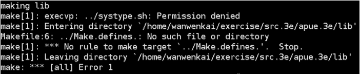
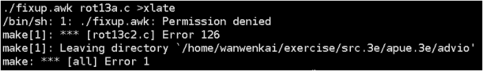

初次学UNIX环境高级编程（第三版）都会遇到头文件”apue.h”怎么添加的问题，这里说下从下载源码到编译通过的整个过程。当然在编译中会遇到各种error，本人也踩了好几个坑，好在都解决了。
下载源码及解压
先新建一个自己准备存放源码的目录，然后下载
解压后的文件在目录”aupe.3e”下。
头文件配置
经过上面的步骤，当前所在目录应该是”/home/learnApue/“
编辑”/usr/include/apue.h”
|
|
光标移动到文件最后一行”#endif”的前面，然后添加如下代码
保存退出
make报错及其解决方案
经过上面的操作，然后就可以编译了，这时你所在目录应该是”/home/learnApue/src.3e/apue.3e/“
正常情况下都会报error，下面是我遇到的error
error类型1

根据错误提示，systype.sh无法执行，我的方法是更改权限然后再编译
error类型2

继续更改权限，只要是执行权限问题，都可以更改权限后再编译
error类型3
下面的这个错误我没有碰到，来自于网友的报错，这里给出关键报错信息
根据这个error提示，应该是缺少一个库，解决方案如下。
要说明的是我是roor权限，不是roor权限的在上一条命令前加sudo，再编译。
希望对各位正在使用UNIX环境高级编程一书的同行们有帮助，有错误还请指出。